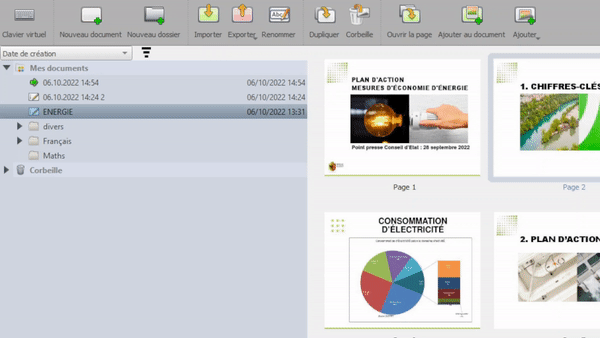
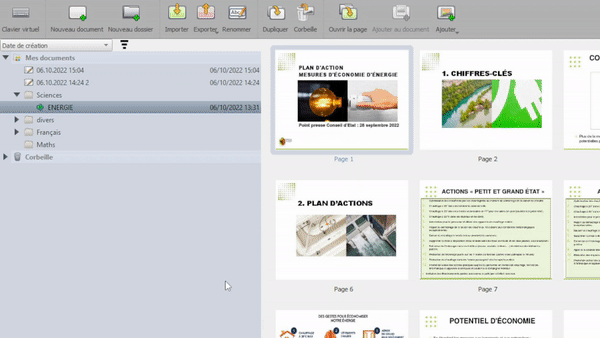

الوصول إلى مدير المستندات
يوفر OpenBoard مديراً للمستندات. انقر على
 لفتحه.
لفتحه.

إنشاء مجلدات وتنظيم عملك
أنشئ مجلداً باستخدام
 ,
ثم قم بتسميته واسحب مستنداتك وأفلتها داخله.
وبالمثل, يمكنك نقل مجلد كامل إلى آخر.
,
ثم قم بتسميته واسحب مستنداتك وأفلتها داخله.
وبالمثل, يمكنك نقل مجلد كامل إلى آخر.

إدارة الصفحات
يمكن لمستند OpenBoard أن يحتوي على.عدة صفحات ومن وضع المستندات، يمكنك:
- تكرار الصفحات
- إرسالها إلى سلة المهملات
- نسخها إلى مستند آخر
- إنشاء صفحات جديدة من مجلد الصور
